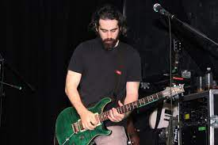
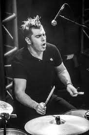

- Jose Madero
- José Madero nació en Monterrey, pero ha vivido toda su vida en el municipio de San Pedro Garza García, Nuevo León, donde desde pequeño fue familiarizándose con distintos géneros del rock, desde el glam rock hasta el punk rock, grunge y rock alternativo. El gusto por esta música le llevó a aprender a tocar la guitarra. Tras varios cambios de estilos y alineación, surgiría Panda en el año de 1996.
JOSE MADERO "Pepe"
- Arturo Arredondo
- Arturo Arredondo Nacio el 23 de marzo de 1983 en la ciudad de Monterrey, Nuevo Leon. Empezo a tocar la guitarra en una banda llamada Super Azfalto junto con el ahora baterista de Panda, Jorge Vazquez "Kross". Tiene estudios en Mercadotecnia, pero tambien trabajo como mesero y vendedor para tener mas experiencia. Llego a Panda en el 2003, cuando Ongi tomo un receso, y entro definitivamente en el 2004 a la banda cuando Ongi decidio retirarse definitivamente.
 Arturo Arredondo "Artur"
- Ricardo Treviño
- Ricardo Treviño Apodo: Rix, Blu, Rikiluis, Riki, Rikiblu, Camisón, Blusa, Blusa grande. Posición en la banda: Bajo y coros. Perfil: Ricardo alías Riki es guitarrista de nacimiento, pero gracias al volado que se realizó cuando se formó PXNDX, le tocó cambiarse al bajo, instrumento que ya después de muchos años de tocarlo, lo domina en su totalidad. Riki tocaba la guitarra en otra banda con Pepe antes que existiera PXNDX, cuando tenían alrededor de 15 años. Fanático a una buena fiesta y con buen paladar para el alcohol, se puede decir que Riki tiene rienda suelta. Hombre muy noble y de buena educación, se graduó de Arquitectura, lo cual le da una visión más artística a cosas consuetudinarias que al ojo desnudo podrían pasar por comunes.
Ricardo Treviño "Ricky"
- Jorge Vazquez
- José Madero nació en Monterrey, pero ha vivido toda su vida en el municipio de San Pedro Garza García, Nuevo León, donde desde pequeño fue familiarizándose con distintos géneros del rock, desde el glam rock hasta el punk rock, grunge y rock alternativo. El gusto por esta música le llevó a aprender a tocar la guitarra. Tras varios cambios de estilos y alineación, surgiría Panda en el año de 1996.
 Jorge Vazquez "Kross"